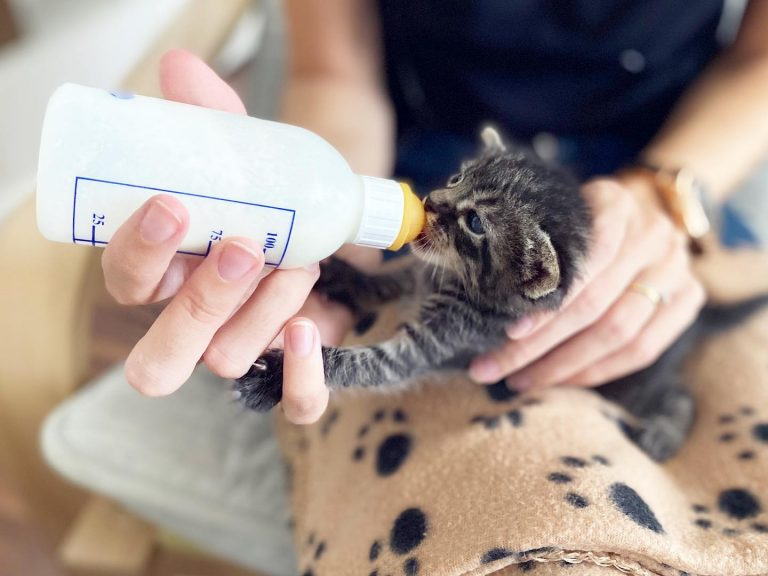

¡Bienvenidos a Patitas Salvajes!
Rescatamos gatitos en situación de calle y les damos una segunda oportunidad 💖
💛 Quiénes somos
Somos un grupo de voluntarias que lucha por el bienestar de gatos abandonados o en situación de riesgo en Junín. No tenemos refugio físico: cada rescate depende del compromiso de la comunidad.
🍼 Pequeñas Patitas, Grandes Corazones
¡Ya rescatamos más de 160 bebés felinos gracias al amor de personas como vos!
Conocé cómo podés ayudar en esta campaña solidaria para gatitos recién nacidos. 💞
Ir a la campaña🐱 Gatitos en adopción
🐾 Actualmente tenemos 0 gatitos disponibles esperando familia 💞

Pelusa
Edad: 3 meses
💉 Vacunado - 🐾 Muy juguetón

Bigotes
Edad: 1 año
🐱 Castrado - 💗 Súper cariñoso

Luna
Edad: 6 meses
🏥 En tratamiento - 🐈⬛ Ideal para compañía
🐾 Últimos rescatados
📬 ¿Querés ayudar?
¿Querés adoptar, donar, ofrecer tránsito o tenés dudas? Escribinos: